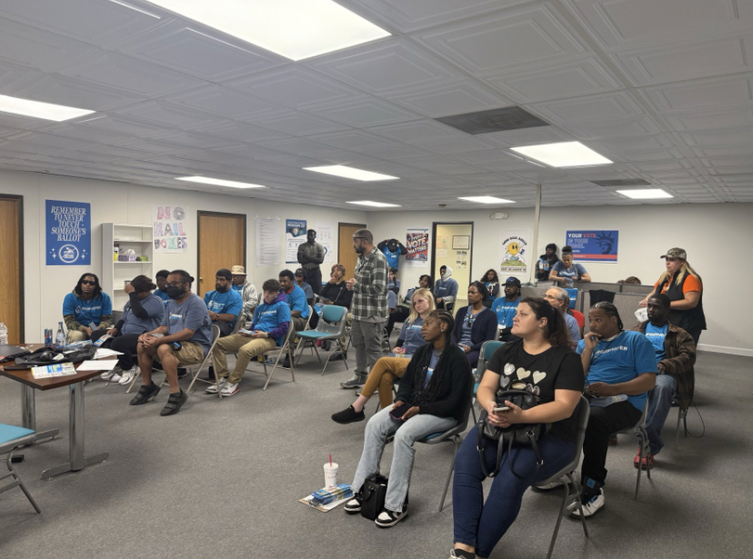
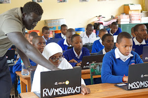

Honored to receive the Ferris Global Scholarship award and grateful for the opportunity to keep turning goals into experiences.
Projects
On the Campaign Trail

Community engagement work with Our Water Our Vote in Metro Detroit.Read about my experience
Over the course of my campaign work with Our Water Our Vote in Detroit, I connected with
residents and community members about legislation affecting access to clean, affordable water
and energy. The work took me out of the classroom and into neighborhoods, where listening
mattered as much as speaking.
Held meaningful conversations with residents
Organized around community concerns
Translated complex issues into accessible conversations
The experience showed me the human side of civic work and taught me that effective advocacy starts
with listening and the willingness to knock on the next door.
Teaching Python in Tanzania

Leading an introductory Python lesson during the Tanzania study abroad program.Read about my experience
During a month-long study abroad program in Tanzania, I worked alongside local schools,
leading activities, assisting with lessons, and teaching students basic computer skills and
introductory Python concepts.
Taught Python fundamentals
Supported classroom instruction
Built confidence in cross-cultural communication
What began as a trip I almost talked myself out of became one of the most meaningful experiences
of my college career, leaving me with greater confidence, adaptability, and a stronger interest
in global community engagement.